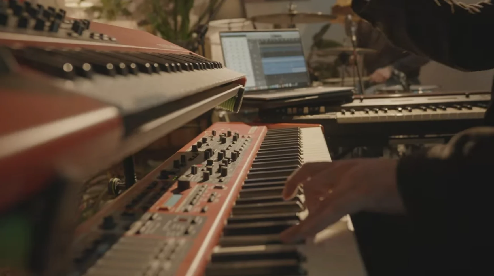
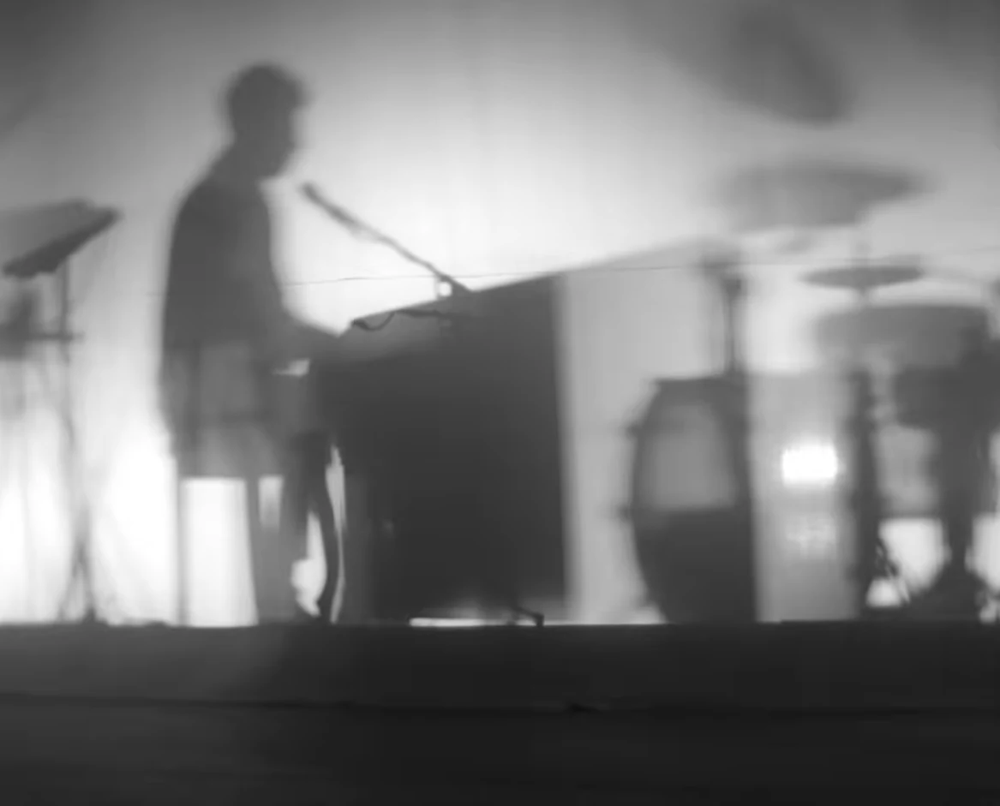

About Marbell Music
Marbell Music operates at the intersection of music, creativity and strategic development.
We work with artists to shape their identities, strengthen their positioning and create opportunities for meaningful artistic and professional growth. Combining creative vision with strategic thinking, we approach artist management and music promotion with a long-term perspective.

Our work also extends beyond traditional music industry boundaries. We develop original artistic concepts and interdisciplinary projects that bring together music, film, theatre, poetry and other forms of creative expression.
From intimate live performances to ambitious concepts for concerts, festivals and stage productions, we explore new ways of connecting artists, disciplines and audiences.
